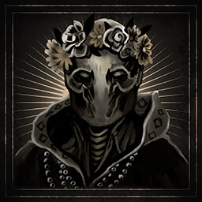
Mid Summer?
Accept Marigold’s flower crown and enter the Festival during the Prologue.
Completion checklist · Steam + PS5
Every requirement is listed directly. Steam and PS5 share the same base-game objectives; PS5 awards the No Lifer Platinum after the other trophies are complete.
Platform scope
Steam lists 53 achievements, including its final completion award. PS5 lists 53 trophies: 1 Platinum, 1 Gold, 10 Silver, and 41 Bronze. This page uses the official Steam icon for each matching entry.
First playthrough priority
Do these before moving past their one-time encounters.

Accept Marigold’s flower crown and enter the Festival during the Prologue.
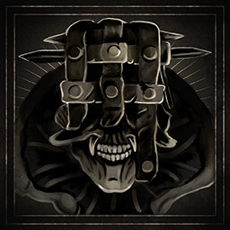
Reduce the Prologue Tar Golem to minimum health.
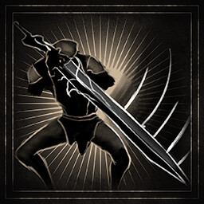
Perfect Guard every hit in The Nameless Captive’s qualifying headspin with the Untarnished Seal equipped.
Completion checklist
Main-progression and final-completion requirements.
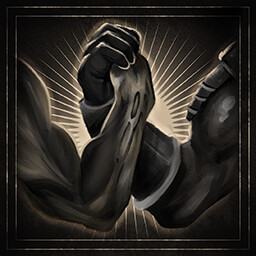
Claim your first Shell, primary weapon, and sidearm.
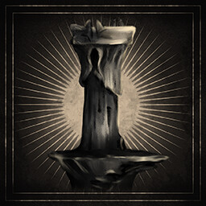
Reach Marrow Keep for the first time.
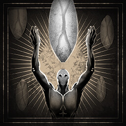
Complete Mortal Shell II.
Completion checklist
Unlock each listed item, then complete the all-gear goals.
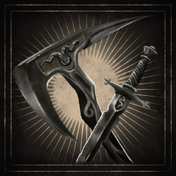
Unlock Axe & Dagger.
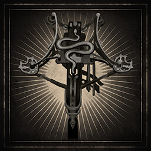
Unlock the Forgotten Crossbow.
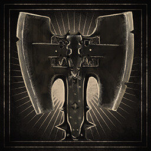
Unlock the Veteran’s Battle Axe.
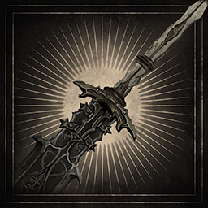
Unlock Great Martyr’s Blade.
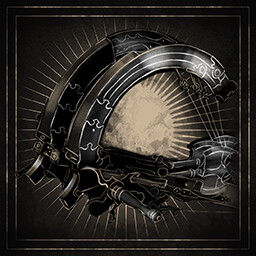
Unlock the Salvaged Trebuchaxe.
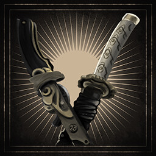
Unlock Axatana.
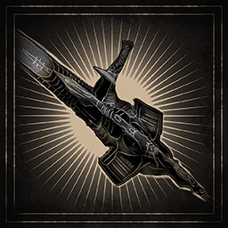
Unlock the Triarch Repeater.
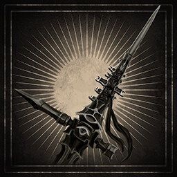
Unlock Black Needle.
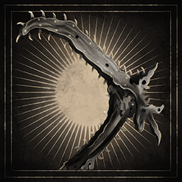
Unlock the Clockwork Scythe.
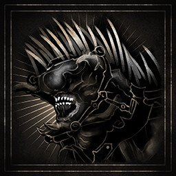
Unlock the Caged Hystrix.
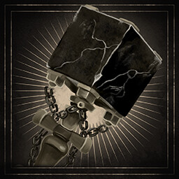
Unlock the Obsidian Hammer.
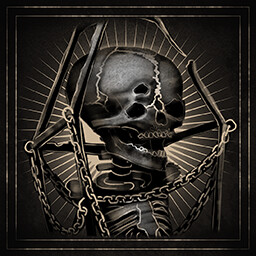
Unlock the Cursed Child.
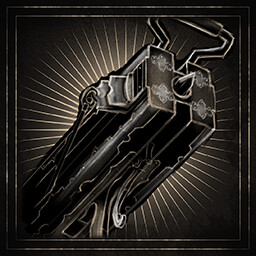
Unlock the Ballistazooka.
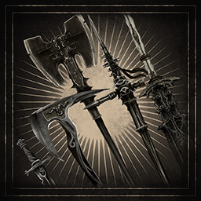
Unlock every primary weapon.
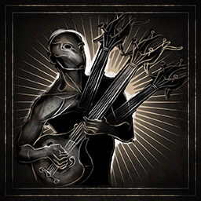
Play all five Troubadour’s Lute tracks.
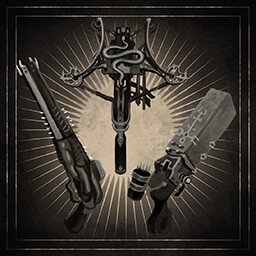
Unlock all sidearms.
Completion checklist
Permanent Shell unlocks and the long-term memory requirement.
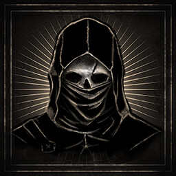
Unlock Tiel.
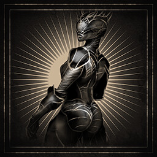
Unlock Proxima.
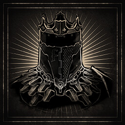
Unlock Eredrim.
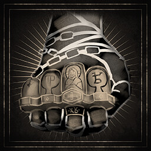
Unlock Smert.
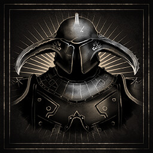
Unlock Gragu.
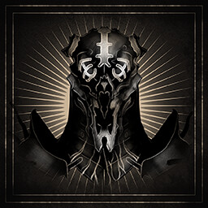
Unlock Sariel.
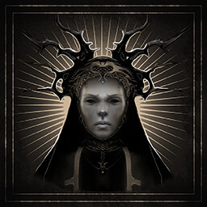
Unlock Sester Genessa.
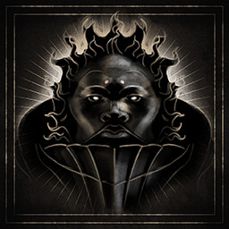
Unlock Lazlo.
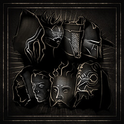
Unlock every permanent Shell.
Completion checklist
Encounter completion only; no build advice is required.
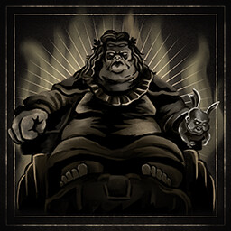
Defeat Magdalena, the Lady of the Woods.
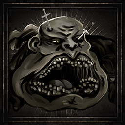
Defeat The Lost Child.
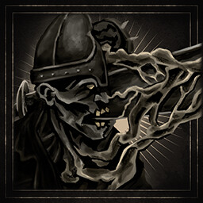
Defeat The Nameless Captive.
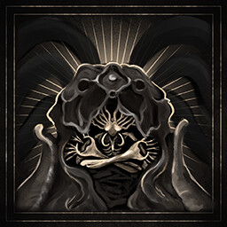
Defeat Hexapod.
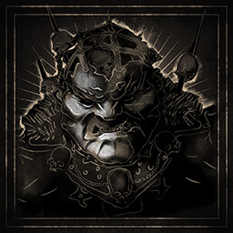
Defeat Droeg, the Conqueror.
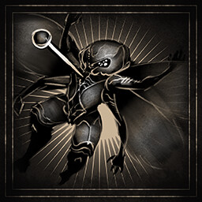
Defeat Sir Isaac, the Scholar-Prince.
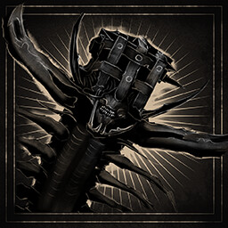
Defeat Orrem, the Reclaimed.
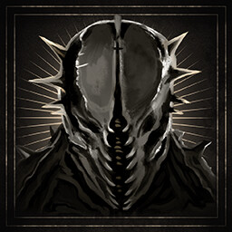
Defeat Malborn Offspring.
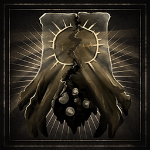
Defeat The Monolith.
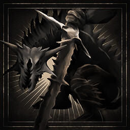
Defeat Zmey, the Unbidden.
Completion checklist
World cleanup, upgrades, optional interactions, and the final platform goal.
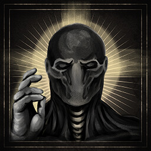
Watch any Shell Memory from the Shellkeeper bond menu.
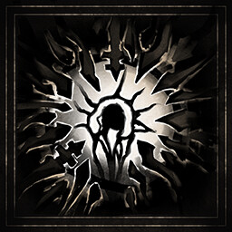
Reach the maximum Shell bonding tier at the Shellkeeper.
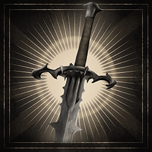
Upgrade any primary weapon to the Tarforge maximum (+16).
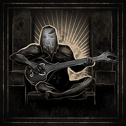
Complete Baghead’s optional dialogue chain and its hidden ending.
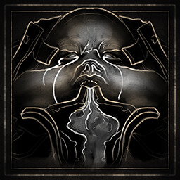
Give Egon a cumulative 10,000 Gloom until he passes away.
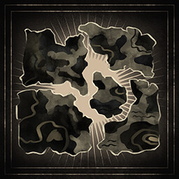
Find every Map Fragment. Open all 11 routes.
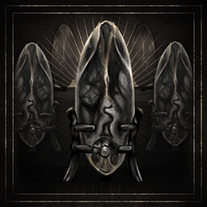
Collect every Ova by cleansing Beacons.
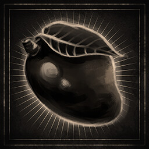
Discover the secret of the Mango.
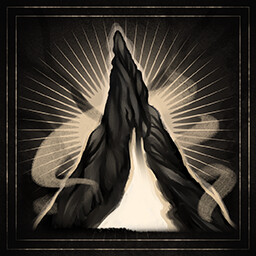
Cleanse all Beacons.
Find every Tarstone.
Watch all 40 Shell Memories.
Steam: complete every other achievement. PS5: earn every other base-game trophy to receive Platinum.
Requirements verified against the official Steam achievement list. Hidden-condition and PS5 Platinum checks cross-referenced with PowerPyx’s PS5 roadmap. Last reviewed: 30 August 2026.